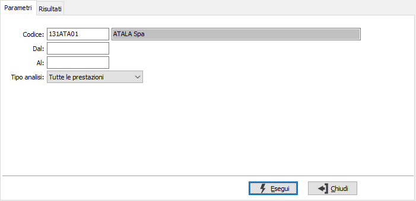
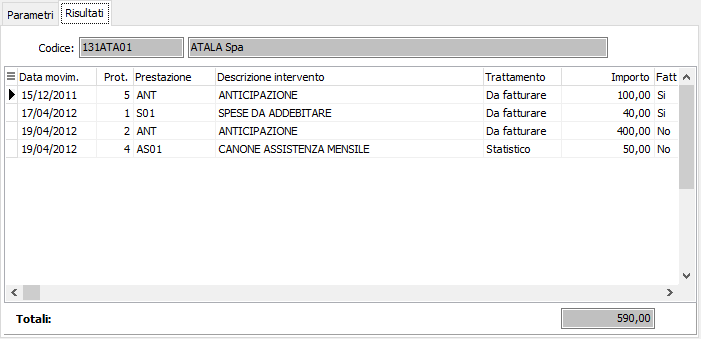

Analisi movimenti prestazioni
Il programma effettua la visualizzazione dei movimenti esistenti in archivio in base ai parametri inseriti dall’utente.
E’ possibile visualizzare i movimenti relativi ad un cliente entro limiti di data specificati.
E’ possibile selezionare solo i movimenti da addebitare oppure tutti i movimenti oppure solo quelli addebitati.
Il programma si articola su due finestre video. La prima, Parametri, consente la definizione dei parametri di analisi.

CLIENTE: codice del cliente, presente in anagrafica, per cui si vuole effettuare la selezione di analisi. Non è consentito lasciare il campo vuoto. Sul campo sono attive le funzioni di ricerca (F9).
DA DATA: eventuale data del movimento da cui deve iniziare l’analisi dei movimenti relativamente ai precedenti parametri di selezione. Confermando a vuoto, l’analisi inizia con il primo movimento valido.
A DATA: eventuale data del movimento con cui si desidera terminare l’analisi dei movimenti relativamente ai precedenti parametri di selezione. Confermando a vuoto, l’analisi si conclude con l'ultimo movimento valido.
TIPO ANALISI: consente di selezionare per l'analisi i soli movimenti da addebitare oppure tutti i movimenti oppure solo quelli addebitati.
Confermando tramite pressione del bottone Esegui, viene avviata la selezione e richiamata la finestra video Risultati, che riporta i movimenti visualizzati in relazione ai parametri inseriti; è possibile entrare direttamente in manutenzione del singolo movimento facendo doppio clic sul movimento interessato.
